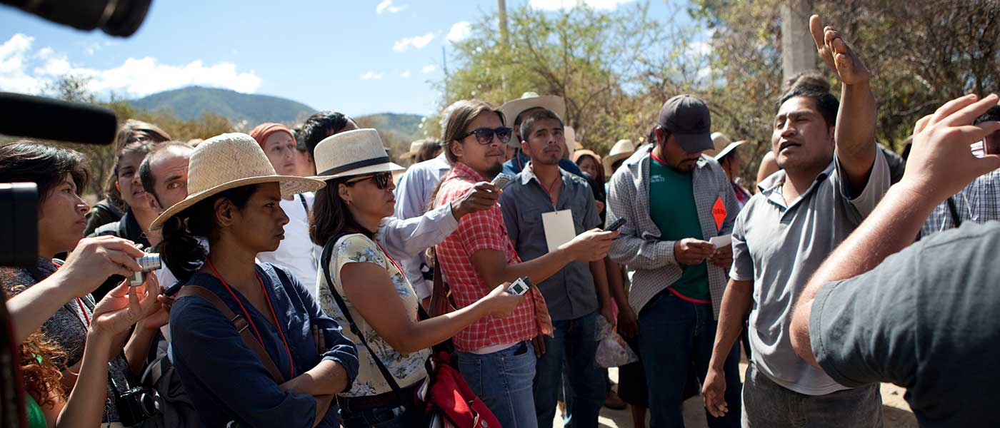
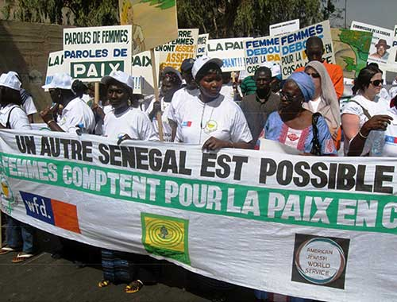

Buddhist monks protest in support of fair and democratic elections in Cambodia in December 2013. Photograph by Evan Abramson
Promoting
Civil and Political Rights
2013: $19.9 million | 196 grantees effecting change
Revealing Human Rights Abuses to the World
In recent years, the people of Burma have made significant progress to overcome more than half a century of brutal authoritarian rule. AJWS grantees contributed to major breakthroughs that resulted in the establishment of a parliament, initial steps toward democratic elections, and some easing of draconian restrictions on basic freedoms. The Burmese government also released many political prisoners—including the iconic democratic opposition leader Aung San Suu Kyi.
Despite this important progress, daunting challenges remain, including the continued violent persecution of ethnic and religious minorities and signs that the situation may escalate into genocide.
AJWS grantee Kachin Women’s Association of Thailand (KWAT), which works with refugees displaced by conflict in northern Burma, is revealing these abuses to the world. KWAT has gathered extensive evidence that the Burmese military has continued to torture, rape and murder civilians behind the scenes, even as the international community celebrates the country’s purported transformation.
In 2013 KWAT testified before the Tom Lantos Human Rights Commission of the U.S. Congress, sharing detailed accounts of the atrocities in Burma. KWAT’s testimony was so powerful that when Representative Trent Franks of Arizona heard it, he urged his fellow policymakers to support increased U.S. pressure on the Burmese government.
Upholding Citizenship Rights
On September 23, 2013, the Dominican Republic’s highest court stripped citizenship from 200,000 people of Haitian heritage, including migrants from neighboring Haiti and their descendants born in the Dominican Republic. This community, one of the poorest in the country, had long faced intense discrimination and violence, and this ruling now rendered them stateless. The government has threatened to deport tens of thousands of people who have nowhere to go.
AJWS grantees have worked to promote the rights of Dominicans of Haitian descent for more than a decade, and they are at the center of local efforts to mitigate the effects of the ruling.
Movimiento Social-Cultural de los Trabajadores Haitianos (MOSCTHA) has filed more than 42 cases with the Inter- American Court of Human Rights to help families fight deportation, and Red de Encuentro Dominico Haitiano—Jacques Viau (REDH-JV) has built a broad alliance of grassroots organizations advocating for the rights of this oppressed community.
In May of 2014 the Dominican Senate passed a bill that will allow some people whose citizenship had been revoked to apply for legal residence. Because the bill will benefit just a minority of those affected and does not grant them full citizenship, AJWS grantees continue to advocate for a just resolution to this crisis and work to secure the full array of rights and freedoms for Dominico-Haitians.
Dozens of human rights activists have been attacked and killed in Central America in recent years. Here, Mexican activist Armando de la Cruz speaks to a delegation of journalists and human rights organizations convened by AJWS grantees to investigate such crimes. Photograph by Evan Abramson
Defending Activists from Attack
In 2013 a Mexican human rights organization ensured that soldiers who raped and tortured indigenous leaders would be put behind bars.
Four years ago, AJWS grantee Tlachinollan Center for Support to Indigenous Peoples of the Mountain won a precedent-setting case before the Inter-American Court of Human Rights on behalf of Inés Fernandez Ortega and Valentina Rosendo Cantú—human rights defenders who were raped and tortured by Mexican soldiers in 2002. The court ordered the Mexican government to hold the perpetrators accountable in the civilian court system, and at the end of 2013 and in early 2014, this crime was tried and finally brought to justice.
As the result of Tlachinollan’s advocacy, the four military officers responsible for the rapes were convicted and imprisoned for torture, rape and abuse of authority.
AJWS is the #1 funder of safety and security for human rights activists worldwide.(International Human Rights Funders Group 2014)
Supporting Peacemakers
For three decades, Senegalese activists have worked to stop a violent conflict in the country’s Casamance region that has claimed thousands of lives and displaced as many as 60,000 people. AJWS funds 10 local organizations, mostly led by women, who are working to stop the bloodshed.
AJWS grantee USOFORAL stages a protest for peace in Dakar, Senegal. Photograph courtesy of USOFORAL
One organization, USOFORAL, organized thousands of women and succeeded in stopping the fighting in their villages. In recognition of this accomplishment, in 2013 the Women’s World Summit Foundation awarded USOFORAL the prestigious annual Prize for Women’s Creativity in Rural Life.
“The women of Casamance carry the torch of peace; you must cross all rural communities and mobilize and sensitize women, listen to their experiences, their voices, so that they can participate in peace in Casamance… I am ready to support [AJWS grantee] PFPC…”SENEGALESE PRESIDENT MACKY SALL
The women of Casamance are now leading a movement to end the conflict in the entire region. Plateforme des Femmes pour la Paix en Casamance (PFPC)—a coalition of 170 women’s organizations co-founded by USOFORAL and funded by AJWS—has mobilized Senegalese President Macky Sall to take up this cause, and he promised them he would broker a lasting peace. Earlier this year President Sall invited PFPC to serve as a mediator in the upcoming peace talks between the government and the rebel forces.
In April 2014, one of the rebel groups declared a ceasefire “to give a chance to ongoing peace negotiations over Casamance.” Thanks to the women’s peace movement, PFPC will be at the table when the details of lasting peace in the region will be negotiated in the coming years.